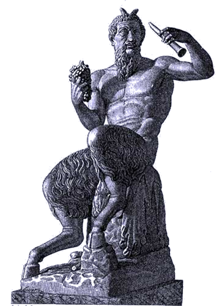
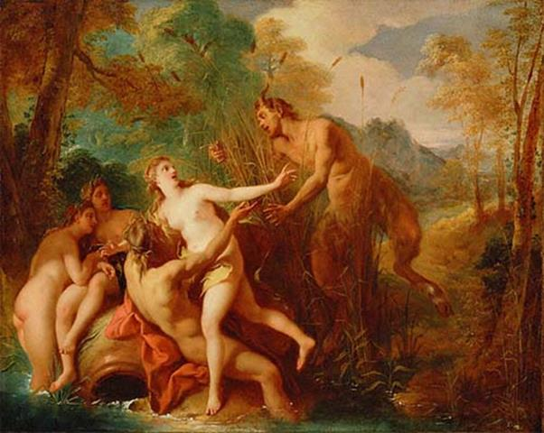

Pan141 là một vị thần trong đoàn tùy tùng của thần Rượu nho-Dionysos. Cha của Pan là vị thần Hermès, người truyền lệnh không hề chậm trễ của các vị thần Olympe. Mẹ của Pan là tiên nữ Dryope. Khi sinh ra Pan, thấy hình thù của con quái gở: đầu có sừng như sừng dê, chân cong và dài, có lông, có móng, râu ria xồm xoàm, lại thêm cái đuôi nữa, nên Dryope sợ hãi quá, vứt con bỏ chạy.

Nhưng Hermès, ngược lại, rất vui mừng vì có một đứa con trai. Thần bế ngay lấy con và đưa lên đỉnh Olympe để nhờ các vị thần nuôi nấng dậy dỗ. Thấy Pan tướng mạo dị kỳ, thân hình kỳ khôi như thế, các vị thần đều bật cười, không một vị thần nào là nhịn được cười, tất cả, tất tất cả các vị thần đều cười, cười ngặt nghẽo, cười như nắc nẻ, vì thế cậu con trai của Hermès mới được các vị thần đặt cho cái tên “Pan” nghĩa là “tất cả”. Sống một thời gian trên thế giới Olympe rồi sau đó Pan xuống trần sống ở núi rừng, đồng cỏ. Thần bảo vệ cho đàn gia súc của những người mục đồng, tính mạng cho những người đi săn, làm cho tổ ong của những người nuôi ong đông con, nhiều đàn lắm mật. Tuy thân hình có vẻ khó coi và dữ tợn nhưng Pan tính tình vui vẻ, cởi mở. Thần sống tha thẩn trong các khu rừng, bình thường xem ra trầm lắng song khi vui thì “bốc” đến nổ trời, vì thế mới được Dionysos tuyển mộ vào đoàn tùy tùng của mình và kết bạn với những Satyre, Bacchantes, Silène. Pan khi vui “bốc”, “say” như thế nào thì khi giận dữ, cáu kỉnh cũng “nảy lửa” đến mức như vậy, nhất là khi những ham muốn tình dục của phần con vật, con dê trong Pan nổi lên thì Pan gây cho các tiên nữ Nymphe một sự kinh hoàng, hãi hùng khôn tả, và đó là do Pan đã bị thần Tình yêu-Éros có đôi cánh vàng bắn những mũi tên xuyên thấu trái tim.
Sống trong thế giới non xanh nước biếc cho nên bạn bè thân thiết của Pan là những tiên nữ Nymphe. Pan thầm nhớ trộm yêu một nàng Nymphe xinh đẹp tên là Syrinx. Syrinx là một tiên nữ tùy tùng của nữ thần Artémis vĩ đại, cho nên nàng cũng nhiễm phải cái thói ham mê săn bắn và kiêu kỳ của Artémis. Nàng khước từ mọi lời tỏ tình của các vị thần. Nàng lẩn tránh khi gặp một vị nam thần. Với cây cung bằng sừng hươu nàng len lỏi trong rừng suốt ngày theo sát gót chân nữ thần Artémis, tìm thú vui trong việc săn muông đuổi thú. Nhiều khi thoáng thấy bóng nàng người ta tưởng nhầm là nữ thần Artémis. Nhưng những người hiểu biết, nhiều kinh nghiệm nói rằng nếu không nhìn thấy ánh vàng ngời ngợi từ cây cung tỏa chiếu ra thì đó đích thực là Syrinx, vì cây cung của Artémis bằng vàng.
Một hôm Pan đang tha thẩn đi chơi trong rừng bỗng thoáng thấy bóng Syrinx, Pan liền bám theo. Nhưng Syrinx cũng kịp thời nhận thấy có người đang bám theo mình, và người đó là thần Pan. Biết mình đang bị thần Pan bám riết, Syrinx vô cùng sợ hãi, cắm đầu chạy. Pan cũng lập tức phóng người chạy theo quyết đuổi cho bằng được Syrinx chạy, lòng tràn ngập nỗi lo sợ, hãi hùng: “Trời ơi! Nếu ta sa vào tay cái vị thần nửa người nửa dê kia thì khủng khiếp biết chừng nào!” Syrinx nghĩ thế và vừa chạy nàng vừa tưởng tượng ra cái cảnh mình bị Pan đuổi bắt được, bị Pan xiết ôm vào trong vòng tay cứng rắn như xiềng xích, bị Pan áp cái bộ mặt gớm ghiếc râu ria xồm xoàm, phả cái hơi thở hôi hôi của loài dê vào khuôn mặt mình. Nhưng thôi rồi, hỏng rồi! Một con sông chắn ngang trước mặt. Chạy đâu cho thoát bây giờ? Nàng vội quỳ xương giơ tay lên trời cầu khấn thần Sông cứu giúp. Chấp nhận lời cầu cứu của người trinh nữ, thần Sông hóa phép biến nàng thành một cây sậy ở ven bờ. Sự việc kể thì dài dòng như thế nhưng thực ra chỉ diễn biến trong chốc lát. Khi thần Pan lao vào Syrinx tưởng chừng như ôm được Syrinx vào lòng thì cũng là lúc Syrinx vừa kịp biến thành một cây sậy, một bụi sậy mềm mại, bấy yếu. Và nó tưởng chừng như vẫn chưa thoát khỏi nỗi khủng khiếp bất ngờ vừa ập đến cho nên nó vẫn cứ run lên trong vòng tay của Pan. Còn thần Pan, mặt buồn thiu, thất vọng. Thần lấy dao cắt mấy ống sậy ghép lại làm một cây sáo kép. Từ đó trở đi Pan gọi cây sáo của mình là Syrinx143, và cũng từ đó trở đi trong các khu rừng, những người mục đồng thường nghe thấy vang lên những tiếng sáo trầm bổng khi thì nỉ non thánh thót như kể lể, giãi bầy, khi thì rộn rã tưng bừng như đang nhảy múa say mê. Người ta bảo, thần Pan đang thổi sáo cho các nàng Nymphe ca múa. Do bản chất của thần Pan và tính chất chuyện này cho nên ngày nay trong tiếng Pháp có từ panique có nghĩa: hoảng hốt, kinh hoàng, khủng khiếp144.

Thần Pan và các tiên nữ Nymphe
Thần Pan còn có lần, cũng như đối với Syrinx, trong khi đi tha thẩn chơi trong rừng chợt bắt gặp nàng Nymphe Écho. Thần liền bám theo. Còn Écho thì cắm đầu chạy. Pan đuổi mãi, hết khu rừng này sang khu rừng khác mà không sao bắt được. Từ đó, Pan nuôi giữ một mối thù ghét Écho. Bằng pháp thuật của mình, Pan làm cho những người mục đồng hóa điên. Họ lao vào cuộc săn đuổi Écho và vây bắt được nàng. Trong lúc mất trí họ tưởng nàng là một con thú, họ giết chết nàng và phanh thây nàng ra hàng trăm mảnh vứt khắp nơi, khắp chỗ trên núi cao, trong rừng già. Từ đó trở đi, bất cứ chỗ nào trên mặt đất cũng có Écho. Và dù nàng Nymphe bất hạnh đó đã qua đời, nhưng chúng ta mỗi khi vào rừng vào núi, chúng ta vẫn nghe thấy tiếng nàng. Nàng theo lời nguyền xưa của nữ thần Héra chỉ được phép nhắc lại những lời nói cuối cùng của người khác.
Thần Pan vĩ đại chết rồi! Là một điển tích bắt nguồn từ một câu chuyện của Plutarque142. Theo truyện thì dưới triều hoàng đế La Mã Tibère (42 TCN - 37), một hôm một con thuyền La Mã đang đi từ Péloponnèse sang đất Ý bỗng có tiếng người nói với người lái thuyền, cầu xin người lái thuyền kêu lên: “Thần Pan vĩ đại chết rồi!” Người lái thuyền băn khoăn do dự hồi lâu nhưng rồi cuối cùng làm theo lời thỉnh cầu đó. Khi người lái thuyền vừa nói dứt câu: “Thần Pan vĩ đại chết rồi!” thì tức thời khắp nơi bỗng vang lên tiếng khóc than thảm thiết. Con thuyền về đến đất Ý. Sự kiện lạ lùng kể trên được tường trình ngay với hoàng đế Tibère. Hoàng đế ra lệnh, công bố ngay cho toàn dân được biết. Và từ đó nảy ra nhiều cách giải thích khác nhau. Khoa thần học Thiên Chúa giáo coi câu chuyện trên đây của Plutarque như là lời tiên báo sự kết thúc của đa thần giáo cổ đại, ngẫu tượng giáo cổ đại để thay thế bằng Thiên Chúa giáo. Sau này câu nói trên còn mang một ý nghĩa rộng hơn. Nó chỉ cái chết của một nhân vật kiệt xuất, sự chấm hết một giai đoạn, một thời đại, một thời kỳ lịch sử.
[141] Theo các nhà nghiên cứu, nguồn gốc từ “pan” thuộc ngôn ngữ Ấn Âu. Pa: chăn nuôi.
[142] Plutarque (40 hoặc 50-125), La disparitino de l’oracle, XVII: Le grand Pan est mort!
[143] Tiếng Hy Lạp syrinx: ống.
[144] Semer la panique: gieo rắc sự khủng khiếp; la terreur panique: sự khủng khiếp bất ngờ.